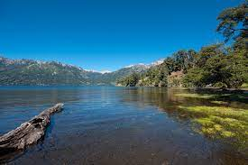
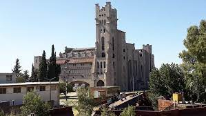

Cidades para conhecer!
O primeiro destino desta viagem será a cidade argentina Bahia Blanca. Ela se localiza a 650km ao sul de Buenos Aires e foi escolhida como ponto de partida por ser um dos grandes centros urbanos antes de pegar a Rota 3, cominho direto até a patagônia. Por ser uma importante cidade industrial e portuária, nela podemos encontrar o Ferrowhite Museo Taller.

Neuquén é uma cidade argentina localizada na província de Neuquén, na região da Patagônia. É a capital da província e a maior cidade da região.
A cidade é um importante centro comercial e cultural, além de ser um destino turístico popular devido à sua localização próxima às montanhas dos Andes e a diversos parques naturais como o Parque Nacional Lanín. Uma grande atração para se conhecer é o Museu Nacional de Belas Artes.
A cidade é conhecida por suas belas praias, como a Praia Bristol e a Praia Grande, e sua ampla variedade de atrações turísticas, incluindo o Porto de Mar del Plata, o Aquário e o Museu do Mar. A cidade também possui uma vida noturna animada, com muitos bares, restaurantes e casas noturnas para todos os gostos.
Além disso, Mar del Plata é um importante centro cultural e de entretenimento na Argentina, com eventos e festivais durante todo o ano, como o Festival Internacional de Cinema de Mar del Plata, o Festival Nacional de Tango e a Feira do Livro de Mar del Plata. Por virtude de sua importância cultural a visita à cidade será um tributo à poetisa Afonsina Storni, que vestida pelas próprias ondas do mar, acabou com o sofrimento da vida.

É conhecida principalmente por ser a porta de entrada para o Parque Nacional Los Glaciares, que abriga o famoso Glaciar Perito Moreno, uma das principais atrações turísticas da Patagônia.

Cidade portuária no extremo sul do Chile, conhecida por sua arquitetura histórica e por ser um ponto de partida para explorar a Patagônia chilena. Aqui encontramos a Reserva Nacional Magallanes.
Locais para visitar!
Ferrowhite Museo Taller - Baia Blanca

Ferrowhite Museo Taller é um espaço cultural localizado em Puerto Madryn, na Argentina, que busca preservar e promover a história da cidade e da região. O museu foi inaugurado em 2015 e está instalado em uma antiga fábrica de conservas de peixe que foi restaurada para abrigar exposições e atividades relacionadas à cultura, arte e história da Patagônia. Clique aqui para mais informações!
Museu Nacional de Belas Artes - Neuquén
O Museu Nacional de Belas Artes (MNBA) é um importante museu de arte localizado na cidade de Buenos Aires, Argentina. Fundado em 1895, o MNBA abriga uma das mais importantes coleções de arte da América Latina, com mais de 12.000 obras de arte, desde a Idade Média até a atualidade.
O acervo do MNBA inclui uma ampla variedade de obras de arte, incluindo pinturas, esculturas, desenhos, gravuras, fotografias e objetos de arte decorativa. A coleção inclui obras de artistas argentinos e internacionais, incluindo Pablo Picasso, Vincent van Gogh, Rembrandt, Francisco de Goya, Auguste Rodin, entre outros.
Monumento a Afonsina Storni - Mar del Plata
Afonsina Storni foi uma das mais importantes escritoras e poetas argentinas do século XX. Nascida em 1892 na cidade suíça de Sala Capriasca, emigrou com sua família para a Argentina quando era ainda muito jovem. Em seu país de adoção, ela se tornou uma figura fundamental da literatura e da cultura, principalmente por sua poesia moderna e feminista.
Infelizmente, a vida de Afonsina Storni foi marcada por desafios e sofrimentos, incluindo o estigma social em relação às mulheres escritoras e a sua própria saúde mental. Ela lutou contra a depressão e a solidão, e acabou tirando sua própria vida em 1938, aos 46 anos.
Hoje, Afonsina é homenageada em diferentes partes da Argentina, incluindo a cidade de Mar del Plata, onde há um monumento dedicado a ela na praia de La Perla. O monumento consiste em uma escultura de bronze que representa a figura de Afonsina, segurando uma flor e uma pena, simbolizando sua poesia e sua luta por uma sociedade mais justa para as mulheres. É uma homenagem merecida a uma das grandes vozes literárias da Argentina e uma figura inspiradora para muitas mulheres em todo o mundo. Clique aqui para mais informações!
Glaciar Perito Moreno - El Calafate

Com uma área de cerca de 250 km² e uma espessura média de 170 metros, o Glaciar Perito Moreno é impressionante não apenas por sua enorme escala, mas também por sua beleza natural. É composto por gelo compacto e cristalino que é tão puro que parece azul. Clique aqui para mais informações!
Reserva Nacional Magallanes, Punta Arenas
Cidade portuária no extremo sul do Chile, conhecida por sua arquitetura histórica e por ser um ponto de partida para explorar a Patagônia chilena. Clique aqui para mais informações!